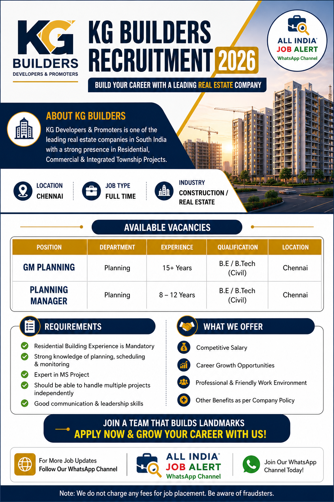

Company : KG Developers & Promoters
Location : Chennai
Job Type : Full Time
Industry : Construction / Real Estate
KG Developers & Promoters is one of the leading real estate companies in Chennai with more than 46 years of experience in residential and commercial construction. The company is known for quality projects, timely delivery and excellent work culture. Candidates looking for long-term career growth in the construction industry can apply for this recruitment.
| Post | Experience |
|---|---|
| GM Planning | Residential Experience Required |
| Planning Manager | MS Project Software Experience |
KG Developers & Promoters has announced the latest recruitment for experienced professionals in the planning department. The company is inviting applications for GM Planning and Planning Manager positions for its ongoing residential projects in Chennai. Candidates having strong planning knowledge, residential project experience and MS Project software skills are encouraged to apply.
This is an excellent opportunity for professionals looking to build a long-term career in one of Chennai's leading real estate companies. Selected candidates will work with experienced engineering teams and contribute to premium residential developments.
Interested candidates who meet the eligibility criteria can apply by sending their updated resume to the official HR email. Candidates should clearly mention the position they are applying for in the email subject line. Applications with relevant residential construction experience will be given preference during the shortlisting process.
| careers@kgbuilders.com | |
| 9790005875 | |
| Location | Chennai, Tamil Nadu |
1. What is the job location?
Chennai, Tamil Nadu.
2. Which positions are available?
GM Planning and Planning Manager.
3. Is residential experience required?
Yes, relevant residential construction experience is preferred.
4. Which software knowledge is required?
MS Project Software.
5. How can I apply?
Send your updated CV to the official HR email.
6. Is this a full-time job?
Yes.
7. Who can apply?
Experienced construction professionals.
8. Is salary mentioned?
Salary will be based on experience and company policy.
9. What documents are required?
Resume, certificates and ID proof.
10. Is this an official recruitment?
Please verify all details with the company before applying.
Get daily private jobs, government jobs and walk-in interview updates directly on WhatsApp.
Stay updated with daily private jobs, government jobs, walk-in interviews and engineering vacancies across India.
Join WhatsApp Channel